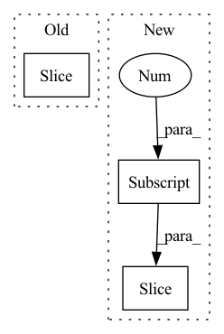

Pattern ID :16367

Before Change
idx_theta2 = torch.cat([idx_theta, idx_theta], dim=1)
// Calculate $[-x^{(\frac{d}{2} + 1)}, -x^{(\frac{d}{2} + 2)}, ..., -x^{(d)}, x^{(1)}, x^{(2)}, ..., -x^{(\frac{d}{2})}]$
neg_half_x = torch.cat([-x[:, :, :, d_2:], x[:, :, :, :d_2]], dim=-1)
// Calculate
//
After Change
// \end{align}
//
// for $i \in {1, 2, ..., \frac{d}{2}}$
x_rope = (x_rope * self.cos_cached[:x.shape[0]]) + (neg_half_x * self.sin_cached[:x.shape[0]])
//
return torch.cat((x_rope, x_pass), dim=-1)
In pattern: SUPERPATTERN
Frequency: 3
Non-data size: 3
Instances
Fragment ID: 55187816
Project Name: lab-ml/nn
Commit Name: 0ce65adf9e602321109528b05cf99fccb16cd2de
Time: 2022-06-03
Author: vpjayasiri@gmail.com
File Name: labml_nn/transformers/rope/__init__.py
M Class Name: RotaryPositionalEmbeddings
N Class Name: RotaryPositionalEmbeddings
M Method Name: forward(2)
N Method Name: forward(2)
M Parent Class: nn.Module
N Parent Class: nn.Module
M File Name: labml_nn/transformers/rope/__init__.py
N File Name: labml_nn/transformers/rope/__init__.py
M Start Line: 132
M End Line: 163
N Start Line: 171
N End Line: 193
'>
Before Change
def transform(self, aud_ft):
_, _, length = aud_ft.shape
aud_padding = np.zeros((1, 1, 245760))
aud_padding[..., :length] = aud_ft
aud_trans = aud_padding.reshape(256, 320, 3).transpose(2, 0, 1)
aud_ts = torch.as_tensor(aud_trans, dtype=torch.float32)
return aud_ts
After Change
wav_tmp = aud_ft[..., n: n + 50176]
if wav_tmp.shape[-1] < 50176:
wav_fill = np.zeros((1, 1, 50176))
wav_fill[..., :wav_tmp.shape[-1]] = wav_tmp
wav_tmp = wav_fill
return torch.as_tensor(wav_tmp, dtype=torch.float32)
'>
Fragment ID: 55187817
Project Name: liaorongfan/deeppersonality
Commit Name: 0fd86d272d808e4c0c3f6da13ea3d70a5f595585
Time: 2021-12-03
Author: 15670381505@163.com
File Name: dpcv/data/datasets/audio_data.py
M Class Name: VoiceLibrosa
N Class Name: VoiceLibrosa
M Method Name: transform(2)
N Method Name: transform(2)
M Parent Class: AudioData
N Parent Class: AudioData
M File Name: dpcv/data/datasets/audio_data.py
N File Name: dpcv/data/datasets/audio_data.py
M Start Line: 58
M End Line: 63
N Start Line: 88
N End Line: 97
'>
Before Change
(grad_outputs,) = await backend.backward_pool.submit_task(inp, grad_outputs)
assert isinstance(grad_outputs, torch.Tensor)
if not is_dummy(prompt):
grad_prompts_reversed.append(grad_outputs[:, :pre_seq_len].unsqueeze(0))
grad_prompts = torch.cat(grad_prompts_reversed[::-1], dim=0) if grad_prompts_reversed else DUMMY
return [grad_outputs] if is_dummy(grad_prompts) else [grad_outputs, grad_prompts] // TODO un-duct-tape
After Change
(grad_outputs,) = await backend.backward_pool.submit_task(inp, grad_outputs)
assert isinstance(grad_outputs, torch.Tensor)
if not is_dummy(prompt):
grad_prompts_reversed.append(grad_outputs[:, : prompt.shape[1]].unsqueeze(0))
grad_prompts = torch.cat(grad_prompts_reversed[::-1], dim=0) if grad_prompts_reversed else DUMMY
return [grad_outputs] if is_dummy(grad_prompts) else [grad_outputs, grad_prompts] // TODO un-duct-tape
'>
Fragment ID: 55187807
Project Name: bigscience-workshop/distributed-bloom
Commit Name: ada98a1b378f8a210afb34e048155be8ecbfc08b
Time: 2022-09-06
Author: artek.chumak@gmail.com
File Name: src/server/handler.py
M Class Name: AnonimousClass
N Class Name: AnonimousClass
M Method Name: _rpc_backward(0)
N Method Name: _rpc_backward(0)
M Parent Class:
N Parent Class:
M File Name: src/server/handler.py
N File Name: src/server/handler.py
M Start Line: 271
M End Line: 306
N Start Line: 283
N End Line: 315